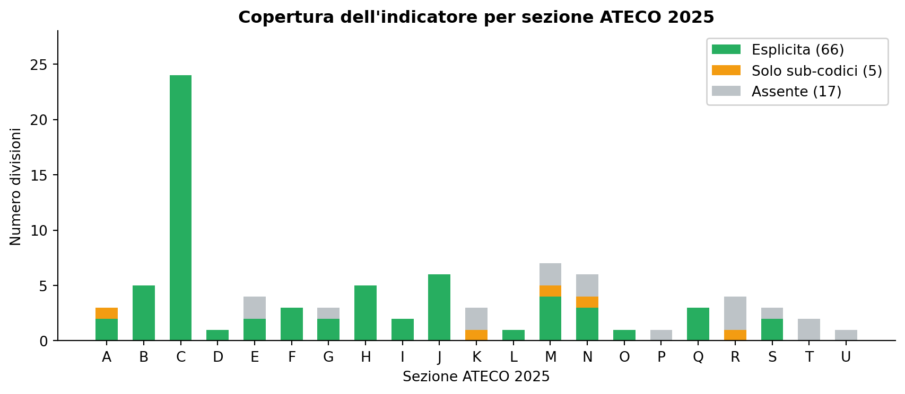
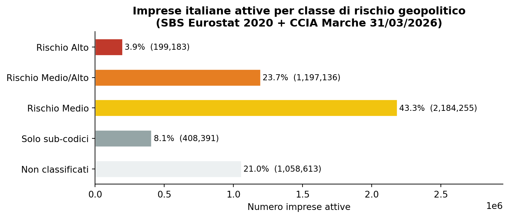
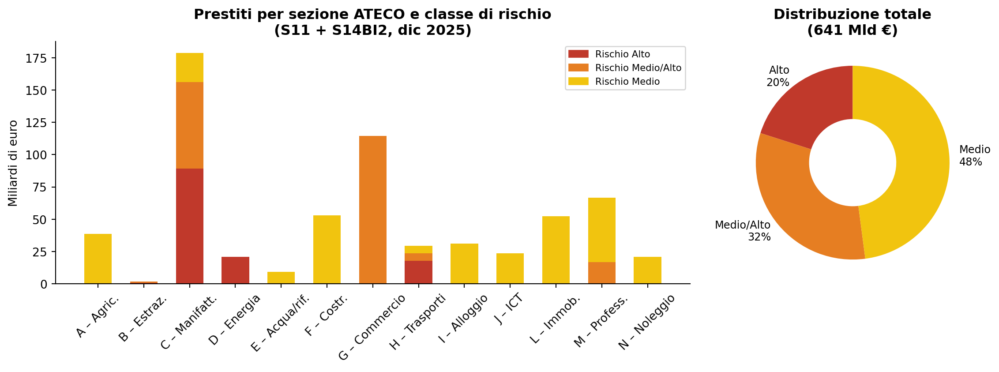
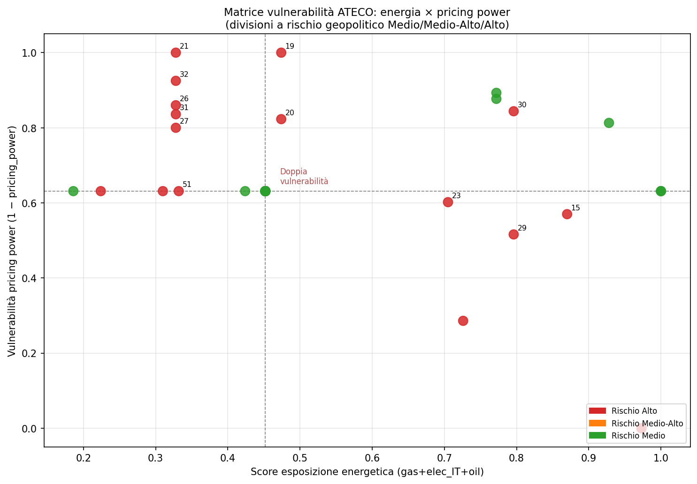

Rischio geopolitico e settori produttivi italiani
Nota tecnica e metodologica — Crisi in Medio Oriente
Paolo Volterra ![]()
La nota descrive la costruzione, la struttura e i limiti dell’indicatore di rischio geosettoriale adottato a supporto delle linee guida per la gestione del credito performing in contesto di crisi in Medio Oriente. L’indicatore classifica i settori produttivi italiani secondo la tassonomia ATECO 2025 su tre livelli di rischio (Medio, Medio/Alto, Alto). Vengono illustrati l’algoritmo di propagazione gerarchica del rischio, le deroghe esplicite identificate, la copertura effettiva dell’universo ATECO e la distribuzione delle imprese italiane per classe di esposizione. La nota evidenzia i principali limiti metodologici e le implicazioni operative per la valutazione del credito.
ATECO 2025, rischio geopolitico, Medio Oriente, credito, settori produttivi
1 Contesto e obiettivo
La crisi in Medio Oriente — con le sue ricadute su rotte commerciali, forniture energetiche e catene di approvvigionamento — ha spinto molti intermediari creditizi a dotarsi di strumenti per valutare l’esposizione geopolitica del proprio portafoglio impieghi. Questa nota adotta un indicatore di rischio geosettoriale costruito sulla tassonomia ATECO 2025, che costituisce la base delle comunicazioni interne e delle linee guida per la concessione e la gestione del credito performing.
La presente nota ha un duplice scopo:
- Tecnico — descrivere come l’indicatore è strutturato, come viene applicato ai codici ATECO a più livelli gerarchici e dove si trovano le principali discontinuità e anomalie.
- Metodologico — segnalare i limiti dell’approccio, i settori non coperti che potrebbero celare rischio latente e le cautele da adottare nell’uso operativo.
2 La fonte: l’indicatore di rischio geosettoriale
L’indicatore è distribuito come file Excel con tre fogli distinti, ciascuno corrispondente a una classe di rischio:
| Foglio | Righe | Descrizione |
|---|---|---|
Rischio_Medio |
943 | Settori con esposizione geopolitica contenuta |
Rischio_Medio-Alto |
1.193 | Settori con esposizione significativa |
Rischio_Alto |
541 | Settori con esposizione critica |
Ogni riga riporta: codice ATECO 2025, descrizione e livello di rischio. Il file non contiene una categoria “Basso” o “Nullo”: tutti i settori presenti nell’indicatore hanno per definizione un livello di esposizione geopolitica almeno Medio. I settori assenti sono implicitamente considerati al di fuori del perimetro di rischio, ma questa esclusione non è documentata esplicitamente.
| 2 cifre | 3 cifre | 4 cifre | 5 cifre | 6 cifre | Totale | |
|---|---|---|---|---|---|---|
| Livello di rischio | ||||||
| Rischio Alto | 18 | 62 | 114 | 152 | 195 | 541 |
| Rischio Medio | 30 | 96 | 200 | 256 | 361 | 943 |
| Rischio Medio/Alto | 18 | 66 | 228 | 363 | 518 | 1193 |
Tabella 1: Distribuzione dei codici per foglio e livello gerarchico
I codici sono presenti a tutti i livelli gerarchici della classificazione ATECO 2025 (da 2 a 8 caratteri, escluso il punto separatore). Questo riflette la struttura dello stesso indicatore, che nella maggior parte dei casi assegna il rischio alla divisione (2 cifre) e lo declina poi per gruppi (3 cifre), classi (4 cifre), sotto-classi (5 cifre) e categorie (6 cifre, equivalenti alle 8 posizioni con il punto).
3 La tassonomia ATECO 2025
ATECO 2025 è la classificazione italiana delle attività economiche, allineata alla nomenclatura europea NACE Rev. 2.1. La struttura è strettamente gerarchica:
Sezione → lettera (A–U), 21 sezioni
Divisione → 2 cifre (01–99), 88 divisioni
Gruppo → 3 caratteri (es. 01.1)
Classe → 4 caratteri (es. 01.11)
Sotto-classe → 5 caratteri (es. 01.11.0)
Categoria → 6 caratteri (es. 01.11.00)Rispetto ad ATECO 2007, la versione 2025 ridefinisce alcune divisioni e introduce nuove sotto-classi nei settori digitali, dell’energia e dei servizi professionali. Le 88 divisioni sono distribuite in 21 sezioni (A–U); la tabella seguente ne riporta la struttura:
| N. divisioni | Descrizione | |
|---|---|---|
| Sezione | ||
| A | 3 | Agricoltura, silvicoltura e pesca |
| B | 5 | Estrazione di minerali |
| C | 24 | Attività manifatturiere |
| D | 1 | Fornitura di energia elettrica, gas |
| E | 4 | Fornitura di acqua, rifiuti |
| F | 3 | Costruzioni |
| G | 3 | Commercio all'ingrosso e al dettaglio |
| H | 5 | Trasporto e magazzinaggio |
| I | 2 | Servizi di alloggio e ristorazione |
| J | 6 | Servizi di informazione e comunicazione |
| K | 3 | Attività finanziarie e assicurative |
| L | 1 | Attività immobiliari |
| M | 7 | Attività professionali, scientifiche |
| N | 6 | Noleggio, agenzie, supporto alle imprese |
| O | 1 | Amministrazione pubblica e difesa |
| P | 1 | Istruzione |
| Q | 3 | Sanità e assistenza sociale |
| R | 4 | Attività artistiche, sportive, intrattenimento |
| S | 3 | Altre attività di servizi |
| T | 2 | Attività di famiglie come datori di lavoro |
| U | 1 | Organizzazioni ed organismi extraterritoriali |
Tabella 2: Sezioni ATECO 2025 e numero di divisioni
4 Metodologia di classificazione e propagazione del rischio
4.1 La regola di propagazione
L’indicatore assegna il livello di rischio a livelli gerarchici diversi a seconda del settore. Quando un codice è assente dal file ma appartiene a una divisione (2 cifre) classificata, il rischio si propaga per discendenza: la sotto-classe eredita il livello del suo antenato più prossimo presente nell’indicatore.
Formalmente, per ogni codice \(c\) non presente nel file si risale la gerarchia:
\[\text{rischio\_effettivo}(c) = \text{rischio}(\text{antenato}^*(c))\]
dove \(\text{antenato}^*(c)\) è il primo antenato di \(c\) — nel senso della struttura ATECO — che compare nell’indicatore. La funzione padre è definita come:
| Lunghezza codice | Padre |
|---|---|
8 caratteri (XX.XX.XX) |
XX.XX.X (rimuove ultima cifra) |
7 caratteri (XX.XX.X) |
XX.XX (rimuove ultime 2 posizioni) |
5 caratteri (XX.XX) |
XX.X (rimuove ultima cifra) |
4 caratteri (XX.X) |
XX (rimuove ultime 2 posizioni) |
2 caratteri (XX) |
nessun padre — radice della divisione |
4.2 Deroghe esplicite
Una deroga si verifica quando un codice figlio è presente nell’indicatore con un livello di rischio diverso da quello che erediterebbe dalla propria divisione o sotto-divisione. Le deroghe sono la principale modalità con cui l’indicatore gestisce le eterogeneità interne a una divisione.
| Divisione | Descrizione | Rischio divisione | Rischio deroga | N. codici | |
|---|---|---|---|---|---|
| 0 | 23 | Minerali non metalliferi | Rischio Alto | Rischio Medio/Alto | 7 |
| 1 | 28 | Macchinari e apparecchiature n.c.a. | Rischio Medio/Alto | Rischio Alto | 2 |
| 2 | 46 | Commercio ingrosso (escluso autoveicoli) | Rischio Medio/Alto | Rischio Medio | 2 |
| 3 | 46 | Commercio ingrosso (escluso autoveicoli) | Rischio Medio/Alto | Rischio Medio/Alto | 1 |
| 4 | 47 | Commercio dettaglio (escluso autoveicoli) | Rischio Medio/Alto | Rischio Medio | 1 |
| 5 | 52 | Magazzinaggio e supporto ai trasporti | Rischio Medio/Alto | Rischio Alto | 7 |
| 6 | 95 | Riparazione di computer e beni personali | Rischio Medio/Alto | Rischio Medio | 1 |
Tabella 3: Divisioni con deroghe interne — 21 codici in 7 divisioni
L’analisi delle deroghe rivela due pattern distinti:
Deroghe verso il basso (rischio del figlio < rischio della divisione): divisioni 23, 46, 47, 95. La divisione viene classificata a un livello conservativo, ma specifiche sotto-classi sono riconosciute come meno esposte. È il caso tipico di settori con produzione eterogenea, dove alcune linee sono legate a materie prime critiche e altre no.
Deroghe verso l’alto (rischio del figlio > rischio della divisione): divisioni 28 e 52. Alcune sotto-classi specifiche — macchinari per il riscaldamento (28.21), attrezzature per ufficio (28.23) e vari servizi di movimentazione merci in aree sensibili (52.21–52.24) — presentano un’esposizione superiore alla divisione di appartenenza.
4.3 L’anomalia della divisione 23
La divisione 23 (fabbricazione di prodotti in minerali non metalliferi) merita una nota specifica. La radice 23 è classificata Rischio Alto, ma 7 degli 8 gruppi di terzo livello (23.1–23.7) sono classificati Rischio Medio/Alto. Solo il gruppo 23.9 (produzione di materiali abrasivi e altri minerali non metalliferi n.c.a.) è Alto.
Questo crea un’asimmetria rilevante nell’applicazione della regola di propagazione: qualsiasi sotto-classe di divisione 23 non presente esplicitamente nell’indicatore eredita il rischio Alto dalla radice, anche se appartiene a un gruppo classificato Medio/Alto. In pratica, la radice funziona come “copertura conservativa” dell’intera divisione, ma non riflette il profilo prevalente.
Indicazione operativa: per i codici ATECO della divisione 23, è preferibile risalire al gruppo di terzo livello (es. 23.1, 23.4) piuttosto che fermarsi alla divisione, per ottenere una classificazione più aderente all’indicatore.
5 Copertura dell’universo ATECO 2025
Delle 88 divisioni ATECO 2025, l’indicatore copre:

Figura 1: Copertura delle divisioni ATECO 2025 per sezione
Le 17 divisioni totalmente assenti appartengono a sezioni caratterizzate da ridotta dipendenza diretta dalle catene di approvvigionamento internazionali coinvolte nella crisi in Medio Oriente: istruzione (P), famiglie come datori di lavoro (T), organismi extraterritoriali (U), attività ricreative e sportive (R parziale), servizi di pubblica utilità locale (E parziale).
Le 5 divisioni coperte solo via sub-codici sono: silvicoltura di supporto (02), attività ausiliarie finanziarie (66), direzione aziendale e consulenza gestionale (70), servizi di supporto alle funzioni d’ufficio (82), creazione artistica e intrattenimento (90). In questi casi, la classificazione di rischio non è espressa a livello di divisione ma solo per specifiche sotto-classi.
6 Distribuzione delle imprese italiane per classe di rischio
La quantificazione dell’esposizione per numero di imprese richiede di incrociare l’indicatore con dati sullo stock di imprese attive per divisione ATECO. La fonte primaria utilizzata è Eurostat Structural Business Statistics (SBS), che fornisce dati a livello di divisione NACE per l’Italia; come fonte di completamento per le divisioni non presenti in SBS si utilizzano i dati CCIA Marche (open data, aggiornati al 31 marzo 2026), disponibili a livello di sezione.
Limitazioni della fonte SBS: i dati più recenti disponibili sono riferiti al 2020. Per le divisioni coperte solo a livello di sezione dalla CCIA, il numero di imprese viene stimato come quota proporzionale (divisioni equamente ponderate all’interno della sezione), il che introduce un’approssimazione che può essere rilevante nelle sezioni con divisioni molto eterogenee per dimensione.

Figura 2: Distribuzione delle imprese italiane attive per classe di rischio geopolitico
| N. imprese | % sul totale | |
|---|---|---|
| Classe | ||
| Rischio Alto | 199,183 | 3.9% |
| Rischio Medio/Alto | 1,197,136 | 23.7% |
| Rischio Medio | 2,184,255 | 43.3% |
| Solo sub-codici | 408,391 | 8.1% |
| Non classificati | 1,058,613 | 21.0% |
| **Totale** | **5,047,580** | **100%** |
Tabella 4: Riepilogo quantitativo per classe di rischio
6.1 Lettura dei dati
Il dato più rilevante è che il 71% delle imprese italiane attive ricade in divisioni con classificazione esplicita nell’indicatore — il che significa che almeno un livello di esposizione geopolitica è attribuito all’attività principale. Il restante 29% si divide tra settori parzialmente coperti (8%) e settori totalmente assenti dall’indicatore (21%).
All’interno delle sole imprese classificate esplicitamente, la distribuzione è fortemente sbilanciata verso i livelli più bassi: il 61% è classificato Medio, il 33% Medio/Alto e solo il 6% Alto. In termini assoluti, le imprese in settori ad Alto rischio sono circa 199.000, pari al 4% del totale nazionale.
6.2 Le divisioni assenti più rilevanti per numerosità
| Div. | Descrizione | N. imprese | Fonte | |
|---|---|---|---|---|
| 0 | 69 | NaN | 298,187 | SBS |
| 1 | 97 | NaN | 165,185 | CCIA_stima |
| 2 | 98 | NaN | 165,185 | CCIA_stima |
| 3 | 74 | NaN | 151,869 | SBS |
| 4 | 45 | NaN | 117,209 | SBS |
| 5 | 81 | NaN | 55,909 | SBS |
| 6 | 64 | NaN | 35,673 | CCIA_stima |
| 7 | 94 | NaN | 25,140 | CCIA_stima |
| 8 | 92 | NaN | 11,242 | CCIA_stima |
| 9 | 91 | NaN | 11,242 | CCIA_stima |
| 10 | 93 | NaN | 11,242 | CCIA_stima |
| 11 | 38 | NaN | 6,727 | SBS |
| 12 | 80 | NaN | 2,416 | SBS |
| 13 | 39 | NaN | 726 | SBS |
| 14 | 65 | NaN | 328 | SBS |
| 15 | 85 | NaN | 297 | CCIA_stima |
| 16 | 99 | NaN | 34 | CCIA_stima |
Tabella 5: Divisioni assenti dall’indicatore — ordinate per numero di imprese
7 Settori non classificati: rischio latente e canali indiretti
L’assenza di un settore dall’indicatore non equivale necessariamente a zero esposizione geopolitica. Esistono almeno due canali attraverso cui settori nominalmente “fuori perimetro” possono ereditare o trasmettere rischio:
7.1 Canale indiretto: portafoglio creditizio e garanzie
I servizi finanziari (divisione 64, ~35.700 imprese tra banche, finanziarie, confidi) e le assicurazioni (divisione 65, ~330 imprese) non operano direttamente in area a rischio, ma la loro esposizione è endogena alla composizione del portafoglio. Un confidi specializzato in garanzie per imprese manifatturiere o commerciali classificate Alto o Medio/Alto trasmette al proprio bilancio il rischio geopolitico di quelle controparti, senza che ciò emerga dalla classificazione ATECO del confidi stesso.
Questa è la principale limitazione dell’approccio settoriale puro: il rischio geopolitico del credito bancario è una funzione della distribuzione settoriale del portafoglio, non del codice ATECO del soggetto erogante. L’indicatore deve essere applicato al settore del prenditore, non dell’intermediario.
7.2 Canale diretto: operatività in area a rischio
Alcune divisioni assenti dall’indicatore presentano un rischio diretto qualora l’impresa operi fisicamente o contrattualmente nell’area a rischio:
| Divisione | Settore | Canale | Rischio suggerito |
|---|---|---|---|
| 80 | Vigilanza e investigazione | Contratti di sicurezza privata in area Medio Oriente | Alto |
| 74 | Consulenza tecnica e scientifica | Supervisione infrastrutture energetiche | Medio/Alto |
| 69 | Attività legali e contabilità | Clientela o sedi in area a rischio | Medio |
| 81 | Servizi per edifici e paesaggio | Facility management di siti industriali | Medio |
Per queste imprese, la valutazione di rischio non può basarsi sul solo codice ATECO ma richiede un’analisi della localizzazione geografica dei contratti e della clientela.
7.3 Sezione T: famiglie come datori di lavoro
Le divisioni 97 e 98 (famiglie che impiegano personale domestico o producono per uso proprio) rappresentano circa 330.000 unità secondo la CCIA. Si tratta di un perimetro convenzionalmente escluso dall’analisi creditizia delle imprese produttive, in quanto non accede al credito bancario in forma organizzata. La loro esclusione dall’indicatore è metodologicamente coerente.
8 Limiti metodologici
8.1 1. L’indicatore non ha una categoria “Nessun rischio”
Come evidenziato, l’indicatore è costruito per identificare i settori a rischio, non per escludere quelli senza rischio. L’assenza di un settore dal file è un silenzio dell’indicatore, non una certificazione di sicurezza. Questo rende impossibile costruire una matrice completa rischio/no-rischio senza integrare fonti esterne o adottare assunzioni esplicite.
Una soluzione operativa è dichiarare esplicitamente che i settori assenti sono trattati come “non valutati per questa crisi” e che la classificazione di rischio non si applica.
8.2 2. La propagazione per discendenza può sovrastimare il rischio
La regola “il rischio della divisione si propaga ai figli” è una semplificazione. In pratica, l’indicatore classifica spesso la divisione per il suo segmento più esposto, non per il profilo medio. Il caso della divisione 23 (radice Alto, figli prevalentemente Medio/Alto) è il più evidente, ma il principio vale in generale: un’impresa in una sotto-classe non specificata eredita il massimo conservativo della divisione, che può essere sovrastimato rispetto alla sua effettiva esposizione.
8.3 3. I dati sulle imprese sono eterogenei per anno e granularità
I dati SBS sono riferiti al 2020 e potrebbero non riflettere le variazioni strutturali successive (crescita dei servizi digitali, contrazione del manifatturiero, ecc.). La CCIA Marche è più recente (marzo 2026) ma ha granularità sezione, non divisione: la distribuzione proporzionale all’interno delle sezioni è un proxy grezzo, specialmente in sezioni con molte divisioni di dimensione molto diversa (es. Sezione M con 7 divisioni che vanno da 69 Legale a 75 Veterinaria).
8.4 4. Il codice ATECO primario non cattura la diversificazione settoriale
Le imprese grandi e diversificate operano in più settori ma hanno un unico codice ATECO primario. Un’impresa con codice principale in un settore a Rischio Medio ma con significativa attività in un’area ad Alto rischio non viene correttamente classificata. Questo limite è strutturale all’approccio settoriale e non è risolvibile senza informazioni sulla composizione del fatturato per linea di business.
8.5 5. L’indicatore non cattura il rischio indiretto tramite la catena di fornitura
Il rischio classificato è diretto: dipende dal settore in cui opera l’impresa, non dalla struttura del suo approvvigionamento o del suo mercato di sbocco. Tuttavia un’impresa può essere esposta al rischio geopolitico anche per via indiretta:
- Canale fornitori: acquisto di input intermedi da settori ad alto rischio (es. un’impresa tessile in div. 13, classificata Rischio Medio, che si approvvigiona di filati sintetici da fornitori dipendenti dalla petrolchimica del Golfo);
- Canale clienti: vendita prevalente a settori esposti, con conseguente rischio di contrazione della domanda o di insolvenza dei principali clienti (es. un fornitore di imballaggi per il comparto chimico o energetico);
- Effetti di secondo livello: propagazione lungo la filiera quando il fornitore del fornitore è a sua volta in un settore critico.
In linea di principio questo rischio potrebbe essere quantificato attraverso le tavole simmetriche Input-Output (Eurostat naio_10_cp1620), calcolando per ogni sezione ATECO la quota di input intermedi proveniente da settori Alto e la quota di output destinata a settori Alto. Nella pratica operativa, la soluzione più efficace rimane il colloquio con il cliente e l’analisi della base fornitori e clienti dichiarata in sede di istruttoria, in particolare per le imprese in settori a Rischio Medio con alta dipendenza da un singolo comparto a monte o a valle.
9 Implicazioni operative
9.1 Per la valutazione delle singole pratiche
L’indicatore fornisce un segnale di primo livello, non una valutazione finale. Il codice ATECO del prenditore determina la classe di appartenenza e attiva eventuali procedure di approfondimento previste dalle linee guida. La classificazione ha valore presuntivo: imprese in settori Alto o Medio/Alto entrano in un percorso di revisione, non in un automatismo di rifiuto.
Per i codici a 2 digit con deroghe interne rilevanti (in particolare 23, 46, 52), è preferibile scendere al livello del gruppo o della classe prima di attribuire il livello di rischio, per evitare classificazioni eccessivamente conservative.
Per le imprese classificate a Rischio Medio, è opportuno verificare in sede di istruttoria la presenza di concentrazioni di fornitura o di clientela in settori ad Alto rischio: un’impresa formalmente nel comparto “basso rischio” può essere significativamente esposta per via indiretta (cfr. Limite 5 nella sezione metodologica).
9.2 Per l’analisi di portafoglio
L’indicatore consente di costruire una mappa del portafoglio impieghi per classe di rischio geopolitico, aggregando le esposizioni per codice ATECO dei prenditori. Questa mappa è utile per:
- identificare le concentrazioni settoriali in classi Alto o Medio/Alto;
- dimensionare il portafoglio soggetto a revisione periodica;
- comunicare alla rete commerciale le priorità di monitoraggio.
Per le divisioni non classificate (21% dell’universo imprese), la raccomandazione è di non assumere automaticamente assenza di rischio, ma di valutare caso per caso per le imprese con operatività internazionale documentata.
9.3 Per i confidi e gli intermediari di garanzia
Come discusso nella sezione precedente, per i confidi l’analisi deve essere condotta sul portafoglio garantito, non sul codice ATECO del confidi stesso. Un confidi dovrebbe produrre una propria mappa di esposizione applicando l’indicatore ai codici ATECO delle imprese garantite e segnalare le concentrazioni rilevanti.
10 Esposizione del credito bancario per classe di rischio geopolitico
La classificazione settoriale assume rilievo concreto quando viene proiettata sul credito bancario effettivamente erogato. Incrociando l’indicatore di rischio con i dati Banca d’Italia su prestiti a residenti per settore di attività economica (fonte: BAM-ATECO, elaborazione su dati dicembre 2025) è possibile stimare il volume di credito in capo a prenditori appartenenti a settori Alto, Medio/Alto o Medio.
La fonte Banca d’Italia (serie BAM-ATECO) fornisce lo stock di prestiti al sistema bancario aggregato per sezione ATECO (lettere A–N) e per due settori istituzionali: S11 (Società non finanziarie) e S14BI2 (Famiglie produttrici — artigiani e lavoratori autonomi). Le sezioni K (Finanziari), O–U e le residuali non sono disponibili a questo livello di disaggregazione.

Figura 3: Stock di prestiti bancari per sezione ATECO e classe di rischio (dic 2025, MLN EUR)
| Descrizione | Totale (MLN) | Alto (MLN) | Medio/Alto (MLN) | Medio (MLN) | |
|---|---|---|---|---|---|
| Sez. | |||||
| A | Agricoltura, silvicoltura e pesca | 38,638 | — | — | 38,638 |
| B | Estrazione di minerali | 1,685 | 674 | 1,011 | — |
| C | Attività manifatturiere | 178,661 | 89,330 | 66,998 | 22,333 |
| D | Fornitura di energia elettrica, gas | 20,859 | 20,859 | — | — |
| E | Fornitura di acqua, rifiuti | 9,333 | — | — | 9,333 |
| F | Costruzioni | 52,913 | — | — | 52,913 |
| G | Commercio all'ingrosso e al dettaglio | 114,480 | — | 114,480 | — |
| H | Trasporto e magazzinaggio | 29,413 | 17,648 | 5,883 | 5,883 |
| I | Alloggio e ristorazione | 31,137 | — | — | 31,137 |
| J | Servizi di informazione e comunicazione | 23,662 | — | — | 23,662 |
| L | Attività immobiliari | 52,190 | — | — | 52,190 |
| M | Attività professionali e scientifiche | 66,819 | — | 16,705 | 50,114 |
| N | Noleggio, agenzie, supporto alle imprese | 20,715 | — | — | 20,715 |
| **Tot.** | **Totale sezioni A–N** | **640,505** | **128,511** | **205,076** | **306,917** |
Tabella 6: Prestiti bancari per sezione ATECO e classe di rischio (dic 2025, MLN EUR)
10.1 Principali evidenze
Su un totale di 640 miliardi di euro di prestiti bancari a imprese e famiglie produttrici (sezioni A–N, dicembre 2025):
Il 20% — circa 129 miliardi — è erogato a settori classificati Rischio Alto. Le componenti principali sono la manifattura pesante e chimica nella sezione C (~89 miliardi, 50% della sezione) e l’energia (sezione D, ~21 miliardi, interamente Alto).
Il 32% — circa 205 miliardi — è in settori Rischio Medio/Alto. Il commercio all’ingrosso e al dettaglio (sezione G) assorbe 114 miliardi, l’intero importo della sezione essendo le divisioni 46 e 47 entrambe Medio/Alto.
Il 48% — circa 307 miliardi — ricade in settori Rischio Medio: costruzioni (53 miliardi), attività immobiliari (52 miliardi), attività professionali (67 miliardi), commercio digitale/ICT (24 miliardi), alloggio e ristorazione (31 miliardi).
Complessivamente, il 52% del credito alle imprese — circa 333 miliardi di euro — è riconducibile a settori ad esposizione significativa (Alto o Medio/Alto).
10.2 Nota metodologica
La stima del credito per classe di rischio a livello di sezione si basa su una ponderazione uguale per divisione all’interno di ciascuna sezione (ogni divisione ATECO presente nell’indicatore contribuisce in quota uniforme all’esposizione totale della sezione). Questa assunzione introduce un’approssimazione rilevante nelle sezioni eterogenee, in particolare la sezione C (manifattura), dove le 24 divisioni hanno volumi d’attività molto diversi e non tutti i sotto-settori sono ugualmente rappresentati nel portafoglio bancario medio.
I dati Bankit disponibili a livello di sezione non consentono di disaggregare ulteriormente senza ipotesi aggiuntive. Per le banche che dispongono del dato di portafoglio per divisione ATECO, è possibile applicare direttamente il vettore di rischio al vettore di esposizione, ottenendo una stima più precisa.
11 Score di vulnerabilità composita: esposizione energetica e pricing power
L’indicatore di rischio geosettoriale classifica i settori in base all’esposizione diretta al contesto geopolitico. Questo approccio cattura bene la dipendenza da materie prime, rotte commerciali e mercati in area di crisi, ma non distingue tra settori ugualmente esposti al rischio ma con capacità molto diverse di assorbire o trasferire gli shock. Due settori classificati entrambi “Rischio Alto” possono avere profili creditizi molto differenti a seconda di quanto dipendono dall’energia fossile importata e di quanto riescono a scaricare i rincari sui propri prezzi di vendita.
Per questo motivo sono stati costruiti due sotto-indicatori complementari — Score B (esposizione energetica) e Score C (pricing power) — combinati in un punteggio composito (Score BC) che permette di ordinare le divisioni per vulnerabilità creditizia effettiva e non solo per esposizione geopolitica nominale.
11.1 Score B — Esposizione energetica per fonte
La crisi in Medio Oriente si trasmette all’economia reale prevalentemente attraverso il canale energetico: aumento del prezzo del petrolio, tensioni sul gas naturale (spesso contrattato a prezzi legati al Brent) e volatilità dell’energia elettrica (in Italia dipendente per circa il 45% dalla generazione a gas). Settori ad alta intensità energetica — e in particolare ad alta dipendenza dal gas — sono strutturalmente più vulnerabili a questi shock.
Fonte dati: Eurostat nrg_bal_s (consumo finale di energia per settore, Italia, anno di riferimento 2022). Per ogni categoria Eurostat viene calcolata la quota di consumo da gas naturale (\(s_{\text{gas}}\)), elettricità (\(s_{\text{elec}}\)) e petrolio/carburanti (\(s_{\text{oil}}\)) sul totale.
Formula dell’energy score grezzo:
\[\text{energy\_score} = s_{\text{gas}} \times 1{,}0 + s_{\text{elec}} \times 0{,}45 + s_{\text{oil}} \times 0{,}5\]
I pesi riflettono la persistenza e la grandezza dell’impatto atteso:
| Fonte | Peso | Razionale |
|---|---|---|
| Gas naturale | 1,0 | Massima esposizione: prezzi volatili con trasmissione in 6–18 mesi; difficilmente sostituibile nel breve |
| Petrolio / carburanti | 0,5 | Impatto rapido (0–3 mesi) ma più breve; parzialmente trasferibile su costi logistici |
| Elettricità | 0,45 | In Italia ~45% della generazione dipende da gas → esposizione parziale e indiretta |
Combinazione con il rischio geopolitico:
\[\text{Score\_B} = \text{rischio\_num} \times (0{,}7 + 0{,}3 \times \hat{e})\]
dove \(\text{rischio\_num} \in \{1, 2, 3\}\) e \(\hat{e}\) è l’energy score normalizzato nell’intervallo \([0, 1]\). Il rischio geopolitico pesa il 70%; l’intensità energetica modula il restante 30%. Un settore con Rischio Alto e massima dipendenza da gas ottiene Score_B \(\approx 3\).
11.2 Score C — Pricing power e capacità di assorbimento degli shock
La capacità di un settore di trasferire i propri rincari di costo sui prezzi di vendita — il cosiddetto pricing power — è determinante per la tenuta dei margini in uno scenario di shock energetico. Un settore con alto pricing power scarica i costi a valle e protegge i margini; uno con basso pricing power li assorbe, con conseguente deterioramento della redditività e, potenzialmente, della qualità creditizia.
Fonte dati: Istat Competitività dei Settori Produttivi (edizione 2022), tabella indicatori_principali. Vengono utilizzate due serie:
- PPI shock 2022: variazione percentuale dei prezzi alla produzione tra 2021 e 2022. Un settore che ha aumentato i prezzi di vendita in misura ampia ha potuto scaricare i rincari energetici sui clienti.
- Variazione del margine lordo 2020→2022: se il margine lordo non si è deteriorato nonostante la crisi energetica, il settore ha assorbito i rincari o li ha compensati tramite prezzi.
Formula:
\[\text{pricing\_power} = \frac{1}{2} \cdot z(\Delta\text{PPI}_{2022}) + \frac{1}{2} \cdot z(\Delta\text{margine}_{2022-2020})\]
dove \(z(\cdot)\) denota la standardizzazione rispetto alla distribuzione inter-settoriale. Il pricing power è quindi un indice relativo: un settore con valore alto ha retto bene lo shock rispetto alla media manifatturiera; uno con valore basso ha subito una compressione dei margini o non ha potuto alzare i prezzi.
Combinazione con il rischio geopolitico:
\[\text{Score\_C} = \text{rischio\_num} \times (1 - \text{pricing\_power})\]
Un settore con Rischio Alto e pricing power nullo (massima vulnerabilità) ottiene Score_C \(= 3\); uno con Rischio Medio e pricing power elevato si avvicina a zero.
11.3 Score BC — Indicatore composito di vulnerabilità
I due score vengono combinati con peso uguale:
\[\text{Score\_BC} = \frac{1}{2} \cdot \text{Score\_B} + \frac{1}{2} \cdot \text{Score\_C}\]
Le divisioni vengono quindi classificate in tre fasce di vulnerabilità in base ai quartili della distribuzione di Score_BC:
| Classe | Criterio | Interpretazione |
|---|---|---|
| Critica | Score_BC ≥ 75° percentile | Alta esposizione geopolitica, alta intensità energetica e/o basso pricing power |
| Elevata | 25° ≤ Score_BC < 75° | Vulnerabilità significativa su almeno una dimensione |
| Moderata | Score_BC < 25° percentile | Esposizione contenuta o buona capacità di assorbimento |
11.4 Matrice di vulnerabilità
La figura seguente posiziona ogni divisione ATECO classificata su due assi: asse orizzontale = intensità energetica (energy score), asse verticale = vulnerabilità al pricing (1 − pricing power). Il colore indica la classe di rischio geopolitico dell’indicatore base.

Figura 4: Matrice di vulnerabilità: esposizione energetica × pricing power, per divisione ATECO (colore = classe rischio geopolitico)
Le divisioni in alto a destra — alta intensità energetica e basso pricing power — presentano la doppia vulnerabilità più elevata. Quelle in basso a sinistra sono relativamente resilienti pur rientrando nell’indicatore di rischio geopolitico.
11.5 Divisioni a vulnerabilità critica
| Div. | Descrizione | Rischio | Score energia | Pricing power | Score B | Score C | Score BC | |
|---|---|---|---|---|---|---|---|---|
| 16 | 19 | — | Rischio Alto | 0.47 | 0.00 | 2.53 | 3.00 | 2.76 |
| 18 | 21 | — | Rischio Alto | 0.33 | 0.00 | 2.40 | 3.00 | 2.70 |
| 27 | 30 | — | Rischio Alto | 0.80 | 0.16 | 2.82 | 2.53 | 2.67 |
| 29 | 32 | — | Rischio Alto | 0.33 | 0.07 | 2.40 | 2.77 | 2.58 |
| 17 | 20 | — | Rischio Alto | 0.47 | 0.18 | 2.53 | 2.47 | 2.50 |
| 23 | 26 | — | Rischio Alto | 0.33 | 0.14 | 2.40 | 2.58 | 2.49 |
| 28 | 31 | — | Rischio Alto | 0.33 | 0.16 | 2.40 | 2.51 | 2.45 |
| 24 | 27 | — | Rischio Alto | 0.33 | 0.20 | 2.40 | 2.40 | 2.40 |
| 12 | 15 | — | Rischio Alto | 0.87 | 0.43 | 2.88 | 1.71 | 2.30 |
| 20 | 23 | — | Rischio Alto | 0.70 | 0.40 | 2.73 | 1.81 | 2.27 |
| 26 | 29 | — | Rischio Alto | 0.80 | 0.48 | 2.82 | 1.55 | 2.18 |
| 41 | 51 | — | Rischio Alto | 0.33 | n.d. | 2.40 | 1.89 | 2.15 |
| 39 | 49 | — | Rischio Alto | 0.31 | n.d. | 2.38 | 1.89 | 2.14 |
| 40 | 50 | — | Rischio Alto | 0.22 | n.d. | 2.30 | 1.89 | 2.10 |
| 31 | 35 | — | Rischio Alto | n.d. | 0.65 | 2.60 | 1.05 | 1.83 |
| 21 | 24 | — | Rischio Alto | 0.73 | 0.71 | 2.75 | 0.86 | 1.81 |
| 3 | 6 | — | Rischio Alto | 0.97 | 1.00 | 2.98 | 0.00 | 1.49 |
| 2 | 5 | — | Rischio Alto | 0.97 | 1.00 | 2.98 | 0.00 | 1.49 |
Tabella 7: Divisioni a vulnerabilità critica (Score BC nel quartile superiore)
11.6 Note metodologiche
Copertura Istat: i dati di pricing power coprono solo le sezioni con dati disponibili nella banca dati Istat Competitività (prevalentemente sezioni B, C, D, E, F, G). Per le divisioni delle sezioni H–N per cui il dato specifico non è disponibile, il pricing power è stimato come media della sezione di appartenenza o, in mancanza di dati di sezione, come media generale. Questo introduce un’approssimazione nelle sezioni dei servizi.
Anomalia C19 (raffinazione): la divisione 19 presenta pricing_power \(= 0\) come artefatto della volatilità estrema dei margini 2022 (anno di forte espansione dei margini di raffinazione). Il valore va interpretato con cautela e la divisione trattata separatamente nelle analisi di portafoglio.
Dati energetici 2022: il mix energetico è riferito al 2022, anno di picco della crisi energetica europea. Successivamente al 2022 molte imprese hanno avviato processi di efficientamento e sostituzione del gas. Lo score B potrebbe sovrastimare l’esposizione corrente per i settori che hanno già completato una significativa transizione energetica.
Rischio geopolitico come moltiplicatore: Score B e Score C amplificano il rischio base, non lo sostituiscono. Una divisione con Rischio Basso (assente dall’indicatore) ottiene Score BC \(= 0\) a prescindere dall’intensità energetica. Lo strumento è pensato per ordinare le priorità all’interno dell’universo già classificato come rischioso.
12 Conclusioni
L’indicatore di rischio geosettoriale costituisce uno strumento utile e operativamente praticabile per il governo del credito in contesto di crisi geopolitica. I suoi punti di forza sono la copertura ampia (71% delle imprese italiane per numero di unità), la granularità fino al livello di categoria ATECO e la distinzione su tre livelli di intensità del rischio.
I principali limiti sono: l’assenza di una categoria di rischio nullo, la possibile sovrastima per propagazione nelle divisioni con deroghe diffuse (in primis la 23), e l’incapacità strutturale di catturare la diversificazione delle imprese multi-settore.
Per un utilizzo corretto, si raccomanda di:
- Applicare l’indicatore al codice ATECO del prenditore (non dell’intermediario).
- Per divisioni con deroghe interne, scendere almeno al livello di gruppo (3 cifre).
- Trattare i settori assenti come “non valutati” e non come “a rischio zero”.
- Per i confidi, costruire la mappa di rischio sul portafoglio garantito.
- Aggiornare la classificazione al cambiamento dello scenario geopolitico: l’indicatore riflette la situazione al momento della sua redazione e non è auto-aggiornante.
Dati elaborati da: Indicatore Rischio Geosettoriale ATECO 2025 (fonte interna); Eurostat SBS 2020; CCIA Marche — Stock Imprese Attive Italia, 31/03/2026; Banca d’Italia — BAM-ATECO, dicembre 2025; Eurostat nrg_bal_s — Consumo finale energia per settore, Italia, 2022; Istat Competitività dei Settori Produttivi, edizione 2022.